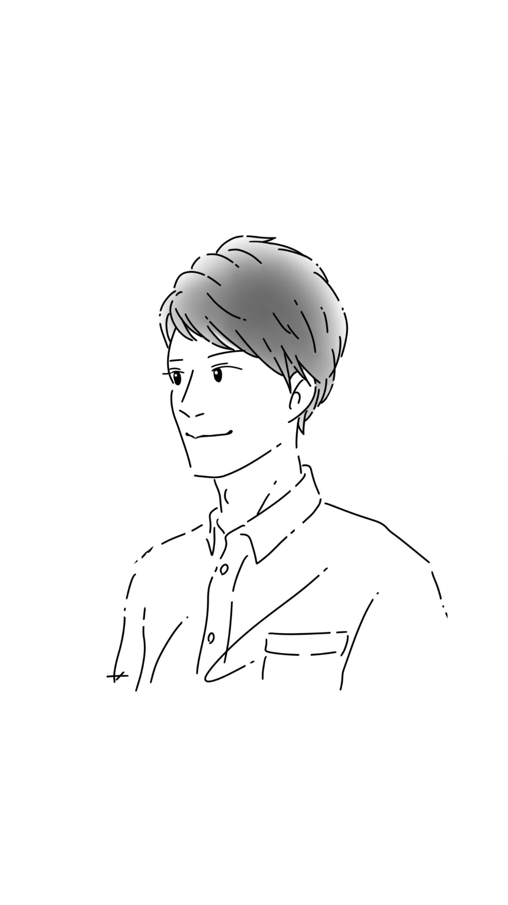

数字で読む、現実の攻略マップ
1〜9・11・22・33の12タイプから、自分の核、持って生まれたクセ、これから向かう方向を読み解きます。占いではなく、自分を現実で使うための“設計図”。
登録不要・必要なのは生年月日だけ。結果までこの1ページで完結します。
―
生年月日を入れると、今日の"自分の取説"が出ます。日付が変わると、内容も変わります。
入れた生年月日は、この端末の中にだけ保存されます（サーバーには送信されません）。次からは、入力なしで開けます。
数字は、自分を責めないための設計図。
現在数・過去数・未来数の3つを計算し、強み、つまずき、向かう方向を読み解きます。占いではなく、自分を現実で使うための“取扱説明書”です。
Enter Birthday
生まれた年・月・日を選ぶと、3つの数字をすぐに計算します。
性格じゃなくて、"設計"の話
数秘12タイプの一覧
現在数は全部で12種類。自分のタイプは、この中の一つです。
3つの数字の、掛け合わせ
処方箋 ── 今日やることは、1つだけ
ここまでが、無料で読める"入口"です。
現在数 の完全ガイド"自分のタイプ"の取扱説明書を、
まるごと1冊。
この診断でわかったのは、自分のタイプという"輪郭"まで。
そのタイプの才能の伸ばし方・つまずきの抜け方・向いてる仕事を、自分の数字ひとつぶんだけ深く書いたのが、完全ガイドです。
完全ガイドで渡すもの
12タイプぜんぶの、
“どこで働くか”の設計図。
タイプの完全ガイドが「自分ひとつぶんの深さ」なら、こちらは12タイプすべての“適職”を横断でまとめた1冊。どのタイプが、どんな仕事・環境なら消耗せず力が出るのか。どこは避けたほうがいいのかを、タイプごとに設計しています。
適職設計図で渡すもの
この鑑定は、生年月日から3つの数字を計算し、その数字の傾向を読み解くものです。運勢や吉凶を占うものではなく、自分の取扱説明書を作るための"ものの見方のひとつ"です。
現実をかえる数秘デザイン ｜ なぎ
2人の生年月日から、関係の"設計の違い"が見えてきます。
自分と、気になる人（パートナー・家族・仕事相手など）の生年月日を入れてください。
ふだん表に出ている、自分のいちばん基本の動き方。「自分はこういう人間だ」と感じている部分の正体です。
無意識に出てしまう反応や、繰り返しハマるパターン。長所にも短所にも見える、自分のクセの出どころです。
このまま進むと、自分がいちばん力を出せる場所。迷ったときに戻ってくるための、コンパスになる数字です。
個別鑑定を受けた方から届いた感想を、匿名・要約でご紹介します。
ひとりでぐるぐる考えてしまうのも、3つの数字がそうさせていたんだと腑に落ちました。やっと、抜ける方法を知ることができました。
鑑定をはじめて受けた方
漠然としていた思いや焦りを、丁寧に言語化してもらえました。さらに解決の道すじまで論理的に説明してくれて、目の前が少しずつ明るくなりました。
自営業の女性
まるで中身を見られているようでした。当たり前にしてきたことも、努力じゃなく、その数字を持って生まれたんだと。いまはロードマップを見ながら、毎日の習慣から始めています。
マスターナンバー11を持つ方
あんなに詳しく、具体的な内容に驚きました。残りの人生、少し勇気を出して1歩踏み出してみよう。そう思える鑑定でした。
人生の後半を考えはじめた方
いろいろ試しても腑に落ちなかったことが、"仕様の問題"だと捉えたら、全部納得できました。
これまで色々と試してきた方

「現実をかえる数秘デザイン」を掲げて、Threadsで数秘×才能・適職の発信を続けています。占い師ではありません。やっているのは、生年月日という動かせない事実から、その人の取扱説明書を読み解くことです。
感情論や、ふわっとした解釈には寄りかからない。「なぜ自分はこう動いてしまうのか」を、できるかぎり数字で説明がつくところまで分解する。それが僕のやり方です。フォロワーは8,000人ほど。個別鑑定は毎月20名限定で続けてきました。
ちなみに僕自身もマスターナンバー11。感じすぎて、うまく言葉にできない。そのしんどさが"数字の仕様"だと分かったとき、ずいぶん楽になりました。同じ場所で立ち止まっている人に渡したいのは、その設計図です。